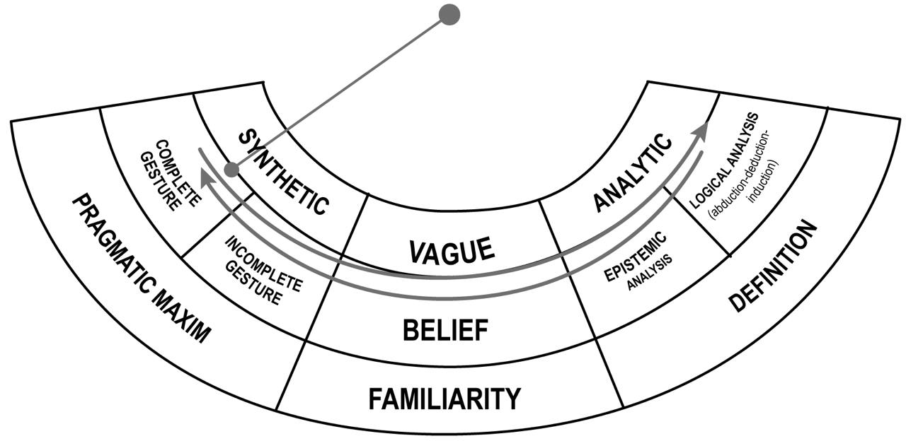

Lady Welby and the vague argument for the reality of God
As much as this correspondence has been studied, few scholars paid attention to the discussion between Charles S. Peirce and Victoria Lady Welby about “A Neglected Argument for the Reality of God”, published by the American logician in The Hibbert Journal at the end of 1908. While discussing the Neglected argument proposed by Peirce, the two authors reveal much of their moral commitment. However, this paper wants to deepen the logical aspect of the discussion that makes their thoughts about the foundations of logic better understood and, at the same time, allows for a different paradigm of logic itself that Peirce and Welby somehow envisaged without comprehending. Thus, I will follow the dialogue they had about belief understood as a topic of logical critic, as Peirce used to call it (1). I will propose a different logical paradigm that the two authors point to without acceding to it completely (2). Finally, I will propose a different reading of the Neglected argument in this new paradigm (3), hoping to help clarify its meaning.
Keywords: God, significs, semiotics, belief, vague reasoning.
Introduction
Scholars worldwide know the relevance of the Welby-Peirce correspondence to semiotics (SS). In the letters, which range from 1903 to 1911, Peirce provides some of his most precise descriptions of his ongoing studies on the subject, including the decisive semiotic characteristics of his logical chef d’oeuvre: the Existential Graphs. Priscilla Borges perfectly summarized the content of the letters in her 2013 article, dividing the two main phases of this epistolary relationship (Borges, 2013). The first one starts when Peirce reviews Welby’s book What is Meaning? in 1903 and ends in 1906. In this first part, Peirce and Welby agree about the necessity of a new science of meaning and an ethics of terminology. Peirce summarizes his semiotics, known as the sixty-six classes of signs. A second crucial phase starts at the end of 1908 when Welby reads Peirce’s article “A Neglected Argument for the Reality of God,” written for The Hibbert Journal (EP2, pp. 434-450). In this second part, besides re-stating all classes of signs, Peirce maps Welby’s degrees of signification on his own Interpretants, summarizes his Existential Graphs, and recalls the genesis of his methodology in his early studies.
The starting topic of the second phase has often passed unnoticed. The article about the reality of God puzzled many who could not make sense of Peirce’s intertwining of practical and theoretical affairs after having said many times the opposite1. For those who know Peirce’s complex system, starting from his research on mathematical continuity, it is not a mystery that Peirce slightly changed his mind around 1905-62. He once again revised his vision of continuity, entering a definitive metaphysical dimension in which any metrical understanding of it, including Cantor’s view of what he now called “pseudo-continuity.” In those years, Peirce tried hard to formulate a mathematical description of this metaphysics, reaching at least a series of characteristics that that kind of continuity should have. The profound unity of the diversity of the universes of experience envisaged by this new understanding eventually led him to reconsider the divide between theory and practice, at least in the case of the supreme object of knowledge, God.
Unsurprisingly, the article caught the attention of Lady Victoria Welby. Her unusual path of research moved out of religion. Growing up in the high aristocracy of England, she was the maid of honor of her godmother, Queen Victoria, married to Lord Welby, and was the mother of three children. Lady Victoria could attend her education only privately and occasionally. She devoted herself entirely to research only when she was around forty. While perusing all topics, she first focused on education and religion, on which she wrote her first book, Links and Clues (Welby, 1883). The failure of this book, and even the embarrassment it provoked in her circle, made her weigh the importance of language, pointing out the poor attention paid to signification. As Wittgenstein and the Oxford school would have underlined fifty years later, ordinary language can and should be studied to understand the different senses and uses of words. Many conceptual and philosophical misunderstandings are only based on language. In her book What is Meaning? (1903) Welby differentiated three levels of signification: sense, meaning, and significance3. The first, linked to our sensory apparatus, traces the reference of words, propositions, and arguments to the universe of discourse and circumstances. The second contains the intention of the utterer. The third represents the plurality of social, moral, and ideal relevance. Even if studies took a technical path here, Welby’s commitment always maintains the initial moral tone. Somehow, ahead of the times, Welby wanted to use the philosophy of language to change society. Peirce felt this moral and political tone and let himself express some of his rare political opinions. He reveals himself as a despiser of British liberalism and, somehow ironically, an appreciator of aristocracy and slavery (SS, pp. 78-79). On the contrary, while passing “sympathetically” under silence all his political outbursts, Welby pleases to be considered a “worker among workers” rather than a noble (SS, p. 13).
While discussing the Neglected argument proposed by Peirce, the two authors reveal much of their moral commitment. However, this paper wants to deepen the logical aspect of the discussion that makes their thoughts about the foundations of logic better understood and, at the same time, allows for a different paradigm of logic itself that Peirce and Welby somehow envisaged without comprehending. Thus, I will follow the dialogue they had about belief understood as a topic of logical critic, as Peirce used to call it (1). I will propose a different logical paradigm that the two authors point to without acceding to it completely (2). Finally, I will propose a different reading of the Neglected argument in this new paradigm (3), hoping to help clarify its meaning.
The discussion on belief, faith, and critical logic
In the article for the reality of God, Peirce condensed his entire logic and applied it to the God of tradition, not the “soul of earth” or the Spirit of idealism4. The God of tradition is beyond any human measure, and therefore, it is the perfect object for logic: wholly unknown and, then, somehow knowable. How can we, human-limited creatures, know Him? Being hindered from returning to “intuition” or any form of direct knowledge that he has opposed since his youth, Peirce presents an organic “nestle” of three arguments. The first is the one he calls “the humble argument,” namely “a living course of thought” (EP2, p. 448), in which “actually and actively” (EP2, p. 446), the human mind is brought by free, playful meditation on the beauty, variety, connectivity of the Universes of ideas, existence, and relations (signs) to the “attractive fancy” (EP2, p. 439) of God’s Reality. Peirce prefers to use the term “reality” to the term “existence” because the former also involves ideas, feelings, and any relations. In contrast, the second refers only to things that fall under the principle of contradiction and excluded-third. Reality includes possibilities and necessities, while existence is limited to actualities. The first argument to grasp this reality, the humble one, is the fruit of instincts that lie at the bottom of our minds and make us see everything as a fruit of a purposeful God. The second argument, the one properly neglected by theologians, is the description of the first. In this description, theologians should have pointed out that human minds naturally tend to believe in God. It is a “latent tendency” (EP2, p. 446), but it is irresistible. In our contemporary terms, we would say that theologians overlooked the quasi-mechanical relationship between human anthropological structure and a vaguely understood God. The third argument is the logical vindication of the first two. In a study of what Peirce calls “logical critics”, we could detect the neglected argument as the primitive stage of retroduction, the passage from consequent to antecedent in cases of surprising phenomena (Maddalena, 2009, pp. 57-96).
Lady Welby had no chance at all to understand the depth of this paper in which Peirce condensed years of meditation upon logic without adequate explanations. Welby was not alone. Peirce confesses to her that almost all of his acquaintances misunderstood what he wanted to say, not to mention the publisher, who did not even comprehend why he was capitalizing letters of some words (SS, p. 143). Peirce employed this graphical trick to stick to precise definitions of words such as Reality, Experience, Universes, and so on. However, out of empathy for her prestigious American correspondent, Welby perfectly understands that this paper is again on the problem of the use of signs, the main topic of their epistolary conversation. Eventually, the conversation will turn to the classification of signs and mapping of Peirce’s interpretants on Welby’s degrees of signification. However, setting aside for now any topic of Speculative Grammar, Peirce’s definition of the study of kinds of signs, let us focus on belief, which is the central topic of Welby’s first letter about Peirce’s article. Welby suggests that Peirce was wrong in talking of belief in God. She even alludes to Peirce’s lack of Faith that prevents him from using Faith itself as the name for our mental relation with God (SS, p. 64). In another passage, she asks whether the proof of the reality of God to which Peirce is referring would be a test or a logical analysis (SS, pp. 63-64). Finally, while claiming to be a muser, a follower of Peirce's technique of free meditation, she questions the description of the surging idea of God as “attractive fancy” or merely “hypo-thetical” proposing a nobler “proto-thetical” function of this idea (SS, pp. 64-65). Other questions are more terminological, while a substantial accord is on reasoning as based on attunement between mind and Nature.
Peirce’s answer to these topics manifests the track of his thought in logical critic that had enormously increased in recent years. I try to disentangle it from the unavoidable redundancies of an informal letter. Peirce’s first answer to the question of clarification about what he means by the word “proof” applied to religion. Peirce has no doubts: “the only logical proof possible is the testing” (SS, p. 68). In explaining, he mentions that otherwise, we would not be talking about “what is true” but “what would be true.” The difference is that in the latter case, we could afford the privilege of examining a hypothesis as we do in mathematics, without caring about immediate decision. Making an example of the experiment of the fall of a weight, Peirce recalls that any existential question needs an experiment to be decided. Some pages later, he states his conviction in another way: “Being a convinced pragmaticist in Semiotic, naturally and necessarily nothing can appear to me sillier than rationalism” (SS, p. 78). Indeed, this is the gist of the pragmatic rule: experiments are the logical way to clarify ideas. In other words, contrary to what any rationalism says, meaningful actions are part of our reasoning. The implications of this compenetrating of theory and practice resulted from pragmatism, and other classic pragmatists like James, Dewey, and Mead portrayed it better than Peirce. Peirce was somehow reluctant to accept the overcoming of the old dichotomy, but as time passed, he inclined more and more toward this unity. As we will see, this reluctance hindered him from revising one of Kantian’s most tenacious legacies, the definition of synthesis and analysis. However, as we see in this answer, there was a profound drive toward a definition that included also experiments.
The second topic touches the gist of the article written for the Hibbert Journal. Welby distinguished between belief and faith, judging the former as fallible and implying that the latter is certain. Peirce could not accept such a distinction. He starts by showing that any proposition, insofar as general (his precise way to indicate universality), can never be certain (SS, p. 72). Propositions have to be determined through collateral experience, namely, with sensuous acknowledgment of the context. Otherwise, they keep being generally true, but generality does not apply to anything. In this way, Peirce also explains some paradoxes of language, such as the one “of the liar”. The proposition “this proposition is false” is always true and false at once because it is not determined with observation. The consequence of this first achievement is that you can always dispute beliefs and that our knowledge is always only composed of beliefs. The objection to Welby is that no propositions can be taken as absolutely certain, not even those about God. If there is any truth, this shall be public, implying its acceptance “as a basis of conduct any person you please would ultimately come if he pursued his inquiries far enough; yes, every rational being, however prejudiced he might be at the outset” (SS, p. 73). There are no absolute truths in that sense, but we are always striving to arrive at them. We must be content with our disputable beliefs, and the point is how to acquire them, as Peirce stated in the famous article “The Fixation of Belief” (W2, pp. 242-257).
How do we acquire the faith or the belief in God? That already was the point of the Neglected Argument. Sarcastically, Peirce excludes that we can obtain it by tenacity (“Will you have the goodness to tell me what you mean by ‘certain’? Does it mean anything more than that you personally are obstinately resolved upon sticking to the proposition, ruat caelum?”, SS, p. 74). However, if faith and belief coincide, we can return to the original etymology of faith to understand what it implies. Faith (from the Greek pistis) means indirect knowledge based on trust (SS, p. 74). We trust the witness who informs us of something we will believe. We have good reasons for trusting the witness, and so our belief is founded upon another belief. This is how all human knowledge is carried down through history. Otherwise, we should start again and again from scratch. This is an assured belief, and it is the best knowledge we can have on this earth. Usually, though, language does not identify faith with assured belief, giving the word a more irrationalist tone. Peirce opines that the word ‘faith’ should be maintained but with a restriction. “I think that what the word is needed to express, and what it might be restricted to express without too great violence to usages that belief which the believer does not himself recognize, or rather (since that cannot properly be called a belief), that which is prepared to conform his conduct to, without recognizing what it is to which he is conforming his conduct” (SS, p. 75).
Faith or belief in God means that we do not recognize exactly the object of our faith/belief, but in any case, we believe it, namely, we conform to it in our conduct. To explain it, Peirce makes a lay example. We have faith in the Liddell & Scott dictionary English-Greek. In that case, faith means that we do not know precisely how and what, but we are sure that whatever it may say, the meaning will be the one it describes, and we will use it.
Finally, Peirce observes that if belief is what is said, something assured even if we do not recognize its object and its process, “every true man of science…who really believes the universe to be governed by reason, or in other words by God, – but who do not explicitly recognize that he believes in God – has faith in God, according to my use of the term Faith” (SS, p. 75).
Therefore, the answer to how we acquire this kind of undetermined belief is The Neglected Argument itself. That is why Peirce concludes half sarcastically about the question on the inappropriateness of treating God as an “attractive fancy” or as “hypothetical.” The argument is good insofar as it explains why we believe instinctively in God before any theology, analytic reasoning, and even testing. So, he concludes that “writing this is like having to explain a joke” (SS, p. 76).
Here, the discussion terminates. Welby simply replies, agreeing with everything Peirce said and defending her position by ascribing her difference between faith and belief to the relevance she attaches to the moral side of faith (SS, p. 89). Anticipating Royce, Welby’s conception of faith adds to belief “loyalty” to what one believes. From there on, the dialogue develops on the decisive role of “simplicity, fitness, adequacy” in reasoning, the relevance of ethics to logic and then on the usual semiotic traits.
To complete the picture of Peirce and Welby on critical logic, we only have to recall other points that appear in their correspondence and, sometimes, in the letters from Peirce to William James. At different times, Peirce returns on the possible mapping between three degrees of significs and his three interpretants. Welby’s sense is like the Immediate Interpretant, whose function Peirce describes as “the total analyzed effect that the Sign is calculated to produce, or naturally might be expected to produce” (SS, p. 110). In other passages Peirce describes it as interpretability, the possibility of being interpreted. Peirce also matches his Final Interpretant with Welby’s Significance, “the effect that the Sign would produce upon any mind upon which circumstances should permit it to work out its full effect” (SS, p. 110). Peirce raises some doubts only about the matching between the Dynamic Interpretant and Welby’s Meaning. They agree in being direct effect of the Sign upon a mind or group of minds, but while Meaning insists on intentionalityAs much as this correspondence has been studied, few scholars paid attention to the discussion between Charles S. Peirce and Victoria Lady Welby about “A Neglected Argument for the Reality of God”, published by the American logician in The Hibbert Journal at the end of 1908. While discussing the Neglected argument proposed by Peirce, the two authors reveal much of their moral commitment. However, this paper wants to deepen the logical aspect of the discussion that makes their thoughts about the foundations of logic better understood and, at the same time, allows for a different paradigm of logic itself that Peirce and Welby somehow envisaged without comprehending. Thus, I will follow the dialogue they had about belief understood as a topic of logical critic, as Peirce used to call it (1). I will propose a different logical paradigm that the two authors point to without acceding to it completely (2). Finally, I will propose a different reading of the Neglected argument in this new paradigm (3), hoping to help clarify its meaning. , the Dynamic Interpretant on actuality of effect. As usual, Peirce tries to underline the all-encompassing powers of signs and their externality.
Certainly, the discussion on Interpretants is part of Peirce’s Speculative Grammar but I had to recall it because it influences the argument on the degrees of clearness of ideas. In a letter to William James, Peirce maps his three degrees – familiarity, definition, pragmatic maxim – that are now defined as “three grades of Clearness of Interpretation” (EP2, p. 496) upon Welby’s degrees of significs. He is sure that Final Interpretant matches the pragmatic maxim, and it is parallel to Welby’s Significance. Then, with some doubt, he seems to identify Welby’s Sense, Dynamic Interpretant, and Logical Analysis, even if he refrains from identifying Meaning with Immediate Interpretant and Familiarity.
Beyond Peirce’s attempts, which might have the provisionality of private correspondence, it is important to see the path of thought he was following, also thanks to Lady Welby’s work. In correspondence with the British scholar, Peirce confirmed that rationalism gives a wrong picture of reasoning. The reasoning completes itself through experiments and the conduct of the action. Moreover, it stems from a vague ground where acritical inferences or strong beliefs stand, justified by the attunement of instinct to nature. The justification and the clarification of belief were the hard topics of the series “Illustration of Science” that he wrote in the 1870s. But now he had amplified his vision of logic, putting it within the horizon of a full scientific metaphysics. Not casually, when Peirce is asked to write an essay in honor of Lady Welby, he will return to the topic of his two best-known articles: “The fixation of belief” and “How to make Our Ideas Clear”.
Proposing a new triad for logical critics: analytic-vague-synthetic
We need now to abandon our two heroes. Peirce and Welby never went beyond what they established at the time of their last epistolary conversation because they got ill very soon. Both died within a few years. The problem of a different paradigm of logic in which there is room for a familiar, vague, immediate form of reasoning like the one used in the Neglected Argument, as well as for logical analysis and pragmatic analysis expressed by the famous maxim, remained. Many times, classic pragmatists added tools of rationality intended to cover the whole realm of reasoning in this expanded form. This explains the odd expressions and theoretical inventions like existential graphs, scientific metaphysics, radical empiricism, stream of consciousness, problem-solving method, conversation of gestures, etc. The very names of these logical or philosophical ideas implied a different view of the relationship between theory and practice. The more one reads the pragmatists, the more evident it becomes that they worked with new epistemic tools that blended the two ways of producing meaningful insights. They showed an insistent drive toward a revolutionary pattern of logic but they did not succeed in forging it completely.
To succeed, we must find another way to define what happens with synthetic judgments, which was the kernel of Kant’s problem and the starting point of the Kantian rationalist canon. A hint towards a different conception of syntheticity comes from Peirce himself. He referred to the analytic/synthetic definition given by Kant only occasionally after the work of his early careerbut his suggestions, spread along his life, are valuable towards a reformulation of this old view of reasoning5. In fact, in one passage, he says that the analytic identity A=A, usually considered as the keystone of precise reasoning, is only a degenerate form of the real identity A=B. A=A is the static correspondence drawn from a set theory definition of multitudes and is a simplification of a “more primitive” form of relation (Peirce, NEM IV, pp. 325-328). Identities are always passing through changes.
From here our new understanding of syntheticity can begin6. We are looking for a synthetic identity A=B, of which the analytic A=A is only a derivative form. When we look for the A=B identity we have to include the concept of change in our reasoning, which means that the new definition of synthesis must involve a recognition of an identity that occurs through changes. If we define analysis from the same point of view, considering it to be a derivative form, we will conclude that analysis is the loosing of the identity A=B through changes. Our experience confirms this new perspective: when we synthetize, we acquire new knowledge about the same object, which we gain only by moving through changes. When we analyze an object, we have to stop this process at a moment in time and break it into pieces. We always apply this theoretical step in academic studies, whether we are discussing literature or physics—we take our subject matter apart in order to know it better and then subsequently recompose and use it. However, our understanding is also often “synthetic” in the way we have defined it. We learn our mother tongue and then foreign languages, but also mathematics and physics, as well as how to ski and swim, by doing something through time, namely, by passing through changes. To be fair, following André De Tienne’s suggestion,7 a third option is possible: we can be blind to any identity through changes. This is the realm of vague reasoning, which happens when we are in awe, when a thought begins, when we try new ideas by exploring contradictions (brainstorming), when we are passing from an analytic to a synthetic perspective, or when an analytic problem reaches a paradoxical outcome. The new paradigm of reasoning, thus, is tripartite: synthetic, analytic, and vague.
It is important to define “change”; otherwise, the new paradigm would fall apart. That is why Peirce’s studies on continuity are so important. The great logician dedicated much of the second part of his life to understanding change and evolution as continuity. Fernando Zalamea has identified four properties of Peirce’s continuum: reflexivity, generality, modality, and transitivity (Zalamea 2012). Each of these four properties underlies one aspect of the relationship between the parts and the whole of continuity and rejects the usual treatment of these objects according to composition/decomposition.8 Real continuity is a transition among modalities in which possibilities can become actualities according to a general regularity. In a Peircean continuum, there must always be room for all three modalities—possibilities, actualities, and generalities—at the same point, which prevents it from being metrically measured. Francisco Vargas (2020) confirmed Zalamea’s description of a Peircean continuum from a mathematical point of view, offering a splendid demonstration based on topology, one of the strategies that Peirce himself tried to explore.
The tools of synthetic reasoning understood as recognition of identity through changes are actions with a beginning and an end that carry a meaning. I call “gestures” (from the Latin “gero”) these actions, which need a phenomenological and semiotic structure to be comprehensible. When Peirce and Welby referred to “testing”, I think they were envisaging this form of reasoning. Existential Graphs and Experiments are gestures. Gestures bring communication and knowledge to the totality of conceivable effects or Significance that Peirce also matched with the Final Interpretant and the outcome of the Pragmatic Maxim.
The tool of analytic judgment is our classic reasoning, which has three kinds: induction, deduction, and abduction.
The tool of vague reasoning is not easily identifiable but Peirce’s belief-faith as stated in the Welby correspondence can be a first valid candidate for this role. An image can help us visualize this tripartite paradigm of reasoning (Fig. 1).

Reading the Argument and the correspondence about it in a new way
Now, we have a different landscape to grasp the content of the Peirce-Welby correspondence in general and the Neglected Argument. In general, Welby and Peirce strive for a broader reasoning conception. “Significs” and “Logic understood as Semiotic” are the two names for this enlargement of the usual Kantian canon. In many passages, they despise rationalism, positivism in its strictest form, and determinism. In the dialogue on the Neglected argument, they often return to the reductionism and the odium theologicum provided by the definition of official theologies and to the poverty of logical analytic proofs. In the original argument, Peirce tried to insert the logical analysis as the third argument of the nest, namely, when we pass to dissect and break up what we have already done with the original belief in God and with tests of this belief on our conduct. Analysis is thus one of the extremities of the pendulum of our reasoning that we have commented. It is not the whole reasoning nor its most original part.
On the other extremity of the pendulum of our reasoning, we find the synthetic reasoning. Peirce and Welby referred to this realm only with the idea of testing. We can now say, more precisely, that our synthetic reasoning works through gestures, meaningful actions with a beginning and an end that carry on a meaning or, to quote Peirce’s early writings, that clarify ideas. 9 As I mentioned before, gestures include diagrams and scientific experiments. However, even language can be considered a kind of gesture. The performance of language to which Welby devoted her attention is in itself a synthetic action that goes from the use of our phonetic apparatus to rhetoric. If we consider the exchange between the two scholars from this perspective, we can see that the attempt to apply signification encompasses topics ranging from existential graphs to politics. They were trying to see the pragmatic side and they correctly understood that it was part of logic, not only applied logic.
Finally, and most importantly, they agreed that there is a reason that it is closer to experience. It is the moment any reasoning stems from, and it is also the kernel of the article written by Peirce about God. I called this realm “vague reasoning”. Reinstated this way, the argument should be named “the vague argument for the reality of God”. Here, we must notice that Peirce is not talking of vagueness as an object but of vagueness in reasoning10. The argument proposes an argument neglected by theologians because it is vague, but according to Peirce, it is the natural argument for which it is easier to believe in God than the contrary.
In fact, what Peirce is proposing has a double aspect. On the one hand, Peirce dictates a way to start this kind of reasoning: it is Musement, a kind of pondering that implies a certain physical movement (the stroll), purposelessness, indifference to contradiction, and liberty. If we think about it, this kind of technique and reasoning is what we have in any brainstorming. We need this form of reasoning to be creative, to change path, to pass from analysis to action, and vice versa. It is the most natural and organic form of thought. The one in which we participate in the growth of our mind. In the letter we analyzed before, he explained that this vagueness in reasoning consists of not recognizing the identity of what we are looking for, but still being assured that it is something to which we conform our conduct. As we said in out pendulum of reasoning, vague reasoning is blind to identity through changes.
On the other hand, the passage of the article in which Peirce uses the term “vague” is the following:
The hypothesis of God is a peculiar one, in that it supposes an infinitely incomprehensible object, although every hypothesis, as such, supposes its object to be truly conceived in the hypothesis. This leaves the hypothesis but one way of understanding itself; namely, as vague but as true so far as it is definite, and as continually tending to define itself more and more, and without limit. The hypothesis, being thus itself inevitably subject to the law of growth, appears in its vagueness to represent God as so, albeit this is directly contradicted in the hypothesis from its very first phase. But this apparent attribution of growth to God, since it is ineradicable from the hypothesis, cannot, according to the hypothesis, be flatly false. Its implications concerning the Universes will be maintained in the hypothesis, while its implications concerning God will be partly disavowed, and yet held to be less false than their denial would be. Thus, the hypothesis will lead to our thinking of features of each Universe as purposed; and this will stand or fall with the hypothesis. Yet a purpose essentially involves growth, and so cannot be attributed to God. Still it will, according to the hypothesis, be less false to speak so, than to represent God as purposeless (EP2: 439-440).
Here Peirce explains that the hypothesis itself is vague but “continually tending to define itself more and more”. This statement has the inevitable reflection on its object: God. God is thus conceived as someone who is continually defining himself, which would be contrary to any necessary idea of God. However, suppose we interpret this vagueness as a progressive revelation of purpose. In that case, we see that we are still arriving, through a vague reasoning started as a musement, to the purposeful God of any religious tradition. This was also the end of the conversation with Welby: any scientist who is looking for something has faith in an order, namely, we can say now, he/she is vaguely but firmly believing in God. Vague reasoning is neither irrationalism nor a return to Cartesian intuition but a new way of acknowledging the plurality of our ways to reach a never completely definable truth.
References
Bellucci F. & Santarelli M., (2023), “Peirce on Vagueness and Common Sense”, Transactions of the Charles S. Peirce Society”, 52 (9), pp. 127-166.
Borges, P. (2013). Tracing signs of a developing science: On the correspondence between Victoria Lady Welby and Charles S. Peirce. Semiotica, 196/1, 163-184.
Brock J., (1969), C. S. Peirce’s Logic of Vagueness, PhD Dissertation, University of Illinois.
Chevalier, J. M. (2020). Peirce’s relativization of the analytic vs. synthetic dichotomy. Blityri, IX (2), 75-104.
Girel, M. (2024). Are There Ambiguous Gestures? In Maddalena, G. et al., Gestures. Approaches, Uses, and Developments. De Gruyter.
Havenel, J. (2008). Peirce’s Clarifications on Continuity. Transactions of Charles S. Peirce Society, 44, 86-133.
Hintikka, J. (1980). C. S. Peirce’s “First Real Discovery” and Its Contemporary Relevance. The Monist, 63, 304–315.
Maddalena, G. (2000). Una ragionevolezza trascurata. Filosofia e Teologia, 1, 153–174.
Maddalena, G. (2009). Metafisica per assurdo. Rubbettino.
Maddalena, G. (2021). Filosofia del gesto. Carocci.
Monti, R. (2024). Semiotica ed epistemologia della vaghezza. Noema, 15, 25-45.
Moore, M. (2007). The Genesis of the Peircean Continuum. Transactions of the Charles S. Peirce Society, 43, 425—469.
Peirce, C.S. (1998). The Essential Peirce, Volume 2, The Peirce Edition Project (Ed.). Indiana University Press. (EP2)
Peirce, C.S. (1976). The New Elements of Mathematics, vols. 1-4. Edited by Carolyn Eisele. Mouton. (NEM)
Peirce, C.S. (1982-2010). Writings of Charles S. Peirce: A Chronological Edition, vols. 1-6, 8. Indiana University Press. (W)
Peirce, C.S., and Welby, V. (1977). Semiotics and Significs. The Correspondence between Charles S. Peirce and Victoria Lady Welby. Edited by C.S. Hardwick. Indiana University Press. (SS).
Petrilli, S. (2009). Signifying and understanding: Reading the Works of Victoria Welby and the Signific Movement. De Gruyter-Mouton.
Shin, S. J. (1997). Kant’s syntheticity revisited by Peirce. Synthese, 113, 1-41.
Tiercelin, C. (2019). Pragmatism and Vagueness. Mimesis International.
Vargas, F., and Moore, M. (2020). The Peircean Continuum. In Shapiro S., Hellman G. (eds.), The History of Continua: Philosophical and Mathematical Perspectives. Oxford University Press.
Welby, V. (1883 [1881]). Links and Clues. Macmillan (second edition).
Welby, V. (1983 [1903]). What is meaning? Studies in the development of Significance. Macmillan.
Welby, V. (2010). Interpretare, comprendere, comunicare. Edited by Susan Petrilli. Carocci.
Zalamea, F. (2012). Peirce’s Logic of Continuity. Docent Press.
Footnotes
See, for example, Nathan Houser in the brief introduction to the article in EP2: 434.↩︎
See all fundamental studies on continuity: Havenel, 2008; Moore, 2007; Maddalena, 2009.↩︎
For a complete study of Welby’s work see Petrilli, 2009, and the introduction by Petrilli herself in Welby, 2010.↩︎
This insistence is evident in the preparatory manuscript of the article. See Maddalena, 2000.↩︎
For a good summary of Peirce’s take on syntheticity, see Chevalier, 2020. See also Hintikka, 1980, and Shin, 1997.↩︎
For a more complete account of this point see also Maddalena 2015, 2021.↩︎
Private conversation.↩︎
Zalamea (2012) subsumes transitivity under modality, but I prefer to make it a separate characteristic of Peirce’s continuum because of transitivity’s fundamental role in explaining “change.”↩︎
On complete and incomplete gestures and their interpretations, see Maddalena, 2021, and Girel, 2024.↩︎
The difference is very important. Many authors have discussed Peirce theory of vagueness (Brock 1969, Tiercelin 2019, Bellucci&Santarelli 2023, Monti 2024), but no one has ever read the topic from the standpoint of a vague kind of reasoning.↩︎